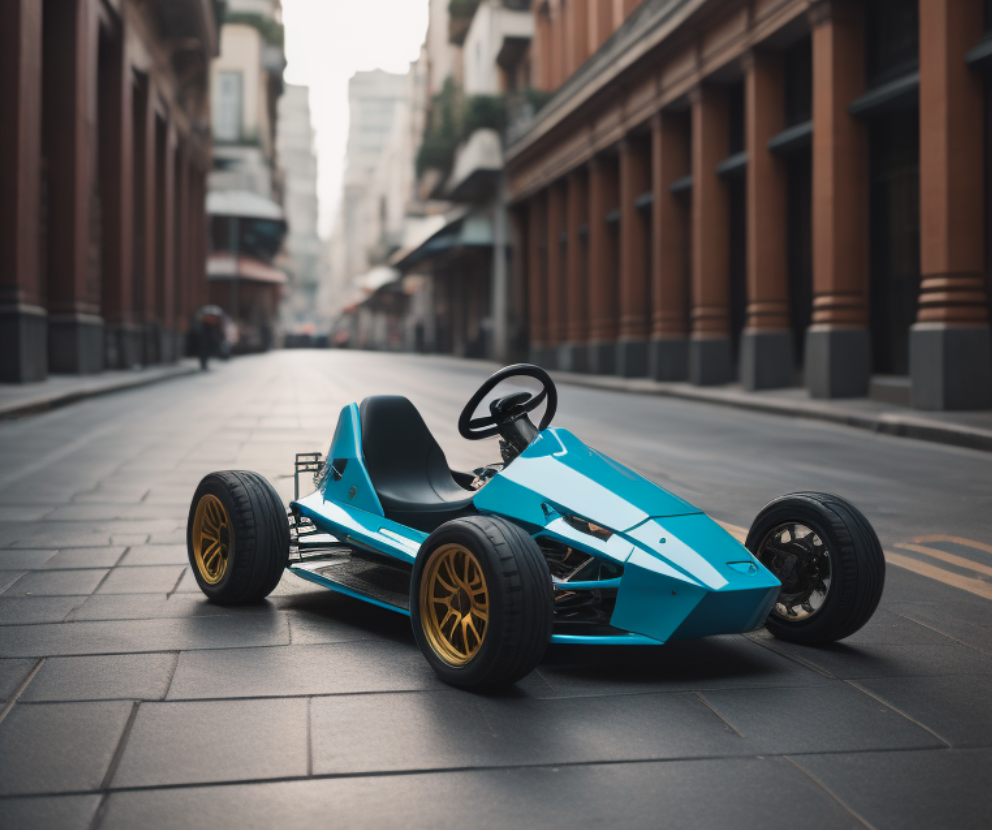

Is Building or Buying a Go Kart Cheaper?

Jeff Bridges
Article Written June 4, 2023 2:05pm ET

Buying vs. Building Overview
When it comes to owning a go kart, the decision between building one from scratch or buying a pre-built model can be confusing. Cost considerations play a crucial role in this choice, as both options have their own financial implications. In this article, we will delve into the surprising truth behind whether building or buying a go kart is the cheaper option, shedding light on various factors to help you make an informed decision. Click here for plans to build a $200 go kart.

Building is Surprisingly Expensive
At first glance, building a go kart might appear to be the cheaper option. After all, you have control over the components and can opt for budget-friendly alternatives. However, the reality is more nuanced. Building a go kart requires purchasing individual parts, tools, and materials, which can quickly add up. Additionally, if you lack mechanical skills, you may need to invest in professional assistance, further increasing the initial cost. On the other hand, buying a pre-built go kart provides a ready-to-use solution, eliminating the need for sourcing parts and investing in tools.
Building May Still Be Cheaper
One significant advantage of building a go kart is the ability to customize it to your exact preferences. From choosing the frame design to selecting specific components, you have the freedom to create a go kart tailored to your needs. However, customization comes with a price. Upgrading individual components or adding advanced features can lead to additional expenses. In contrast, pre-built go karts often come with a standard set of features, limiting the customization options. If customization is a top priority, building a go kart may be the more cost-effective option in the long run.

Buying May Have Cheaper Maintenance
Another aspect to consider is the cost of maintenance and repairs. Building a go kart allows you to familiarize yourself with its construction, making future repairs and maintenance more manageable. You have a better understanding of the components and can troubleshoot issues effectively. Additionally, sourcing replacement parts for a self-built go kart may be more affordable compared to proprietary parts for pre-built models. However, pre-built go karts often come with warranties and after-sales support, providing peace of mind and potential cost savings on repairs. Consider your mechanical aptitude and willingness to handle maintenance tasks when evaluating the long-term costs.
Buying Has Better Resale Value
Resale value is an often overlooked aspect when discussing the cost of go karts. Pre-built go karts from reputable manufacturers generally retain a higher resale value due to brand recognition and market demand. On the other hand, the resale value of a self-built go kart can vary depending on factors such as build quality, customization, and the buyer's perception. If you foresee selling your go kart in the future, buying a pre-built model may offer better returns on your investment.
Buying Or Building: Conclusion
Determining whether building or buying a go kart is cheaper requires careful consideration of various factors. While building a go kart initially seems cost-effective, the expenses can quickly accumulate, especially if you lack mechanical skills or require professional assistance. Buying a pre-built go kart offers convenience and potentially better resale value, but customization options may be limited. Ultimately, your budget, mechanical abilities, desired level of customization, and long-term plans for the go kart should guide your decision. Remember to weigh the upfront costs, maintenance requirements, and potential resale value to make an informed choice.


Questions? Contact Us
If you have any questions about our go kart designs or need assistance, feel free to reach out to us. You can contact us by email at darringer.capital.investments@gmail.com
You can also visit our FAQ section.
darringer.com | 2023 privacy policy